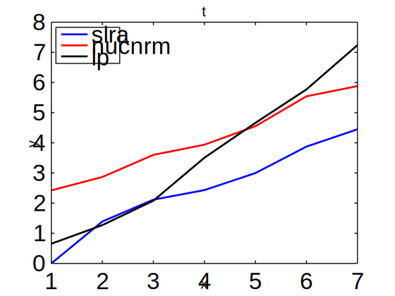

Comparison of methods for system identification with missing data
Setup
Methods compared
- Nuclear norm minimization
[sysh_nn, wh_nn] = nucnrm_md(y, u, n);
- SLRA method for output error identification (initial approximation from
nucnrm_md)
opt.exct = 1:m; % output error opt.sys0 = sysh_nn; % initial approximation [sysh, info, wh] = ident(w, m, ell, opt);
- Local polynomial method (
dof=20)
[sysh_lp, yh_lp] = lpoly_md(u, y, Tm, n, 20);
lpoly_md is a wrapper function calling MissingDataLocalPolyAnal and MissingDataLocalPolyAnal_MIMO
function [sysh, yh] = lpoly_md(u, y, Tm, n, dof) [m, T] = size(u); if m > T, u = u'; m = T; end [p, T] = size(y); if p > T, y = y'; p = T; end data = struct('u', u', 'y', y', 'Ts', 1); method = struct('dof', dof, 'order', [], 'transient', [], ... 'startfreq', [], 'stopfreq', [], 'step', []); if (p == 1 & m == 1) data.MissingValuesPosition = Tm; [CZ, Z, freq, dof, yh, G, CovG, dof, CL] = MissingDataLocalPolyAnal(data, method); else for i = 1:p, data.MissingValuesPosition{i} = Tm; end [CZ, Z, freq, MissingValues, TZ, G, CovecG, dof] = MissingDataLocalPolyAnal_MIMO(data, method); yh = []; for i = 1:p, yh(:, i) = data.MissingValuesPosition{i}; end end sysh = ss(tfest(iddata(G', ones(size(G')), 1, 'freq', freq), n, 'Ts', 1)); % is this correct?
Data generation
sys0 = drss(n, p, m); u0 = rand(T, m); y0 = lsim(sys0, u0); w0 = [u0 y0];
yt = randn(T, p); w = w0 + NL(i) * [zeros(T, m) yt] / norm(yt, 'fro') * norm(y0, 'fro');
w(Tm, m + 1:end) = NaN; u = w(:, 1:m); y = w(:, m + 1:end);
Validation
e_md = @(yh) norm(y0(Tm, :) - yh, 'fro') / norm(y0(Tm, :)) * 100;
Testing all methods for different noise levels
<<true-data>> <<define-e_md>> for i = 1:np for j = 1:N <<noisy-data>> <<missing-values>> <<nucnrm>> <<ident>> <<sysid>> e_nn(j, i) = e_md(wh_nn(Tm, m + 1:end)); e_id(j, i) = e_md(wh(Tm, m + 1:end)); e_lp(j, i) = e_md(yh_lp); end end plot(NL, mean(e_id), 'b'), hold on, plot(NL, mean(e_nn), 'r'), plot(NL, mean(e_lp), 'k') legend('slra', 'nucnrm', 'lp', 'location', 'NorthWest')
Experiments
Initialization
clear all, rand('state', 0), randn('state', 0) addpath /home/im/mfiles/missing-data-dynamic/simio/ % nucnrm_md
General simulation parameters
ell = 1; m = 1; p = 1; T = 100; n = p * ell;
N = 20; np = 7; NL = linspace(0, 0.1, np);
A block of missing values
Tm = 40:60; test, print_fig('block') plot2svg block.svg

|
Periodic missing values
Tm = 10:ell + 1:90; test, print_fig('periodic') plot2svg periodic.svg
|  |